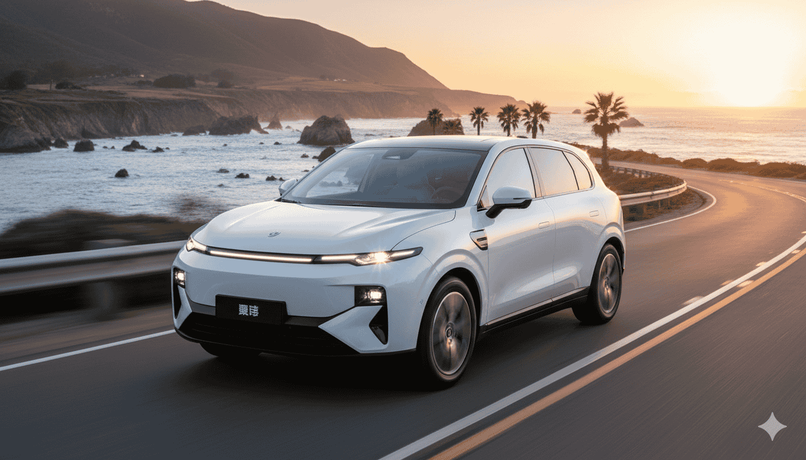

En el mundo de la movilidad eléctrica, las alianzas internacionales están transformando el panorama. El Leapmotor Lafa 5 representa uno de los ejemplos más interesantes de esta tendencia, especialmente con su futura producción parcial en España. Si estás considerando dar el salto al eléctrico, esta noticia podría influir en tu decisión.
¿Qué es el Leapmotor Lafa 5?
El Leapmotor Lafa 5 es un vehículo eléctrico compacto de origen chino que ha llamado la atención por su equilibrio entre autonomía, precio y tecnología. Fabricado por Leapmotor, una marca perteneciente al grupo Stellantis, este modelo busca competir directamente con opciones europeas como el Peugeot e-308 o el Renault Mégane E-Tech.
Entre sus características más destacadas se encuentran:
- Autonomía estimada: aproximadamente 450 km WLTP
- Potencia: 204 CV
- Aceleración 0-100 km/h: 7,5 segundos
- Carga rápida: del 20 % al 80 % en 30 minutos
- Precio estimado: entre 28.000 y 32.000 €
Si estás familiarizado con el mercado de coches eléctricos chinos en España, sabrás que Leapmotor se posiciona como una alternativa interesante frente a marcas más establecidas como BYD o MG.
Producción parcial en España a partir de 2026
Según fuentes del grupo Stellantis, la producción parcial del Leapmotor Lafa 5 comenzará en España en el tercer trimestre de 2026, probablemente en la planta de Zaragoza, donde ya se fabrican modelos eléctricos como el Opel Corsa-e.
Este movimiento forma parte del acuerdo Leapmotor International, la joint venture entre Stellantis y Leapmotor, que busca impulsar la presencia de vehículos eléctricos chinos en Europa, aprovechando la red industrial y logística del grupo europeo.
💡 Dato interesante:
La producción en España no solo garantiza estándares europeos de calidad, sino que también facilita la integración en la cadena de suministro local, algo que ya hemos visto con otros modelos como el Dongfeng Vigo de Stellantis.
El ensamblaje español se centrará en las versiones destinadas al mercado europeo, garantizando estándares de calidad y adaptaciones a la normativa de la UE.
¿Por qué Leapmotor apuesta por Europa?
Leapmotor, junto con otras marcas chinas como BYD o MG, ha entendido que Europa es clave para la expansión global del coche eléctrico. Sin embargo, a diferencia de otras compañías, Leapmotor ha optado por una integración industrial real, asociándose con un grupo europeo y trasladando parte de la producción fuera de China.
Este enfoque ofrece dos ventajas principales:
- Evita aranceles adicionales derivados de las tensiones comerciales UE-China.
- Refuerza la percepción de calidad entre los consumidores europeos.
Si te interesa saber más sobre la expansión de marcas chinas en Europa, te recomiendo leer nuestro análisis sobre coches eléctricos chinos vs europeos.
Impacto en la industria española
La decisión de fabricar parcialmente el Leapmotor Lafa 5 en España refuerza el papel del país como polo industrial de la movilidad eléctrica. España se beneficia de:
- Nuevos puestos de trabajo en la cadena de suministro.
- Transferencia tecnológica en sistemas de propulsión eléctrica.
- Mayor diversificación industrial dentro del grupo Stellantis.
Además, el anuncio se alinea con la estrategia nacional para convertir a España en un hub de electromovilidad en el sur de Europa, junto con los proyectos de baterías de Sagunto (PowerCo) y Navalmoral (Envision).
Este movimiento también tiene implicaciones en la industria de baterías. Si quieres profundizar en cómo China está cambiando su estrategia en baterías eléctricas, te recomiendo nuestro artículo completo sobre el tema.
Leapmotor Lafa 5 vs rivales europeos
Para que tengas una visión clara de dónde se posiciona el Leapmotor Lafa 5, aquí tienes una comparativa con sus principales competidores:
| Modelo | Autonomía (km WLTP) | Potencia (CV) | Precio estimado (€) |
|---|---|---|---|
| Leapmotor Lafa 5 | 450 | 204 | 28.000 – 32.000 |
| MG4 Electric | 450 | 204 | 30.000 |
| Peugeot e-308 | 410 | 156 | 39.000 |
| Renault Mégane E-Tech | 450 | 220 | 39.500 |
Como puede verse, el Leapmotor Lafa 5 destaca por ofrecer una relación autonomía/precio muy competitiva, situándose en el rango del MG4 Electric pero con una presentación más moderna y una mayor integración europea.
Conclusión: el Leapmotor Lafa 5 marca una nueva etapa en la colaboración China–Europa
La llegada del Leapmotor Lafa 5 no solo amplía la oferta de coches eléctricos asequibles, sino que marca un punto de inflexión en la cooperación industrial entre China y Europa.
Con producción parcial en España y el respaldo de Stellantis, este modelo promete dinamizar el mercado eléctrico europeo y ofrecer a los conductores una alternativa sólida, eficiente y económica.
🚀 Mi opinión personal:
El Leapmotor Lafa 5 representa exactamente lo que necesita el mercado eléctrico: calidad china a precios europeos con producción local. Si buscas un compacto eléctrico sin complicaciones y con buena autonomía, este modelo podría ser tu elección ideal.
¿Qué te parece esta nueva propuesta de Leapmotor? ¿Crees que la producción en España marcará la diferencia en la percepción de calidad?